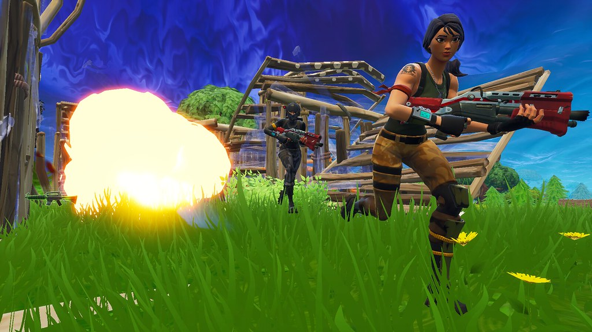

Quase todos os jogadores de Fortnite sabem o quão difícil é ter maestria no jogo, dado que um pro player possui um leque de habilidades ricamente desenvolvido:
- edição
- construção
- noção de fight
- noção de jogo
- awareness
- piece control
- mira
Desse modo, surge a pergunta: por que há players que jogam diversas horas por dia, há muito tempo, e não alcançaram nem um pouco do que jogadores profissionais logram? Bom, a resposta está intimamente ligada à qualidade do tempo de jogo (prática de qualidade), à consistência / mentalidade e à capacidade de aprender com os próprios erros.
A importância da consistência
Diante disso, vale analisar o aspecto mais importante para o sucesso em qualquer habilidade: consistência. De nada vale, numa segunda-feira, treinar intensamente, analisar seus erros, realizar VODs, dar o seu máximo e, durante o resto da semana, sequer se lembrar do jogo. De fato, é melhor um treino diário, eficiente e focalizado do que um mega grind. Em conjunto a isso, pode-se mencionar a mentalidade, pois aquele que realmente se torna bom não só consegue manter uma rotina consistente, como ainda não se abala diante da ausência de frutos e frustrações iniciais; pelo contrário, trata as barreiras como desafios, oportunidades de melhora. Dessa forma, fica evidente a necessidade de uma postura positiva e resiliente para uma rápida evolução.
Qualidade do treino
Além disso, uma pessoa pode não apresentar resultados apesar de realizar todo o conjunto de skills supracitado, visto que o treino deve ser de qualidade, ou seja, abordar aspectos pertinentes a um jogador exímio e descartar práticas inúteis e/ou de baixo impacto na gameplay. Para exemplificar esse panorama, analisemos como dois players hipotéticos, se bem que representam realidades recorrentes, despendem suas horas no Fortnite. O primeiro é o C9_W7M_EnzinL2R2, o qual sonha em ser um jogador profissional, mas passa o dia todo destruindo seus amigos da escola no modo Criativo, joga campeonatos despretensiosamente e seu treino é fazer um mapa de edit aleatório sem objetivos claros. O segundo é um profissional de elite, quem aquece as articulações e o corpo antes de iniciar seu treino para evitar LERs (lesões por esforço repetitivo), personaliza seu treino conforme suas lacunas de habilidades, joga muitos 1v1s e 2v2s contra jogadores de alto nível, realiza análises — meta, VODs, outros players de sucesso — e dá o seu máximo em campeonatos, planejando seu drop, loot path e estratégia. Ademais, alinha todos os aspectos de sua vida para um desempenho otimizado no Fortnite: sono, alimentação, saúde mental, exercícios físicos. Nesse sentido, fica escancarado o gap presente entre essas duas personagens idealizadas.
Conclusão
Assim, mesmo que não seja fácil se tornar um jogador profissional de Fortnite, com a mentalidade certa, consistência e um esforço bem direcionado e repetido, esse processo se torna quase como uma receita de bolo, mas cujo chefe deve ser preciso em cada aspecto para alcançar o prato desejado. Por fim, vale ressaltar que o esporte de alto rendimento, em qualquer área, não é saudável em longo prazo, e que certas pessoas apresentam maior ou menor afinidade natural ao jogo.